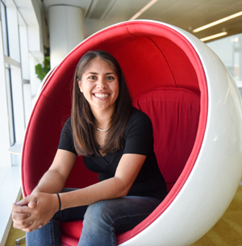

About Me
 I have been a PhD student in the Computer Science Department of North Carolina State University since the Fall of 2012. Upon entering the program I joined the Center for Educational Informatics under the direction of Dr. Tiffany Barnes. I also lead the Raleigh STARS program which aims to broaden participation in computing.
I spent a year getting my Masters at UNC Charlotte working in the Games + Learning Lab, under Dr. Tiffany Barnes. I created the Students in Programming Robotics & Computer Science (SPARCS) program at UNC-C, which introduces middle school students to fun computing topics. I also helped revive the CCI Graduate Student Organization and was an active member of the Graduate & Professional Student Government.
Prior to starting my graduate career, I received my Bachelor's in Computer Science from NCSU in December 2010 with a minor in Science Technology & Society. As an undergraduate student I was a member of the University Scholars Program and the STARS Alliance. Through these activities I was able to begin working on research which helped to solidify my desire to continue onto graduate school.
Education
- Ph.D. Computer Science
- (Currently Enrolled)
- North Carolina State University
- Research Area: Game based learning and curriculum development & evaluation
- M.S. Computer Science
- (2011-2012)
- UNC Charlotte
- Concentration: Mobile Game Development
- Research: Social game based learning for introductory programming & Social networking games to improve interaction at conferences. (BOTS, Snag'em)
- B.S. Computer Science
- (2007-2010)
- North Carolina State University
- Magna Cum Laude
- Minor: Science, Technology, & Society.
- Research: Measuring affect in intelligent game based learning environments. Won student research symposium at STARS Conference 2010
Research
My current research interests include broadening participation in computing through STEM education. My master's work was on developing educational video games to teach foundations of computer science through drag and drop programming. My preliminary doctoral research focused on a longitudinal study of students participating in my computing outreach programs. After finding success in the outreach program, I turned to training high school AP CS Principles teachers in identifying computational thinking in student coding assignments.
- Research Grants & Funding
- NSF Graduate Research Fellowship, $132,000
- Microsoft Research Graduate Women's Scholarship, $17,000
- NCSU Women in Computer Science, $4,000
- STARS Alliance Travel Grant, $3,400
- Grace Hopper Conference Apple Scholarship, $800
- NCSU Center for Educational Informatics, Raleigh, NC
- (2012-Present)
- The Center is comprised of Dr. James Lester's Intellimedia group, Dr. Tiffany Barnes' relocated Games+Learning Lab, and Dr. Min Chi's Data-Mining and Reinforcement Learning group. In the center we collaborate on various projects for improving education through advanced technology.
- Microsoft Research - Outreach, Remote Work
- (Summer 2015)
- Working with Roy Zimmerman at Microsoft Research, I conducted a field review of reliable scientific literature on Minecraft Education and organized it into a browsable catalog and white paper. The review included both formal (schools) and informal (libraries, after school, camps, etc) learning environments, as well as anecdotal research. The goal was to 1) learn whatever we could from extant research 2) identify any research Microsoft might want to support and extend 3) identify possible new research questions for study down the road.
- Microsoft Research - Connections/Outreach, Redmond, WA
- (Summer 2014)
- Working with Rane Johnson-Stempson at Microsoft Research, we developed two on-line resources for girls interested in computing. The first resource is a middle school computing toolkit, the second a series of lessons for AP CS Principles. These tools were developed using Office Mix and are freely available for sharing. Through the Big Dream Movement and our global partners we want to distribute the materials to millions of girls worldwide.
- UNCC Games + Learning Lab, Charlotte, NC
- (2011-2012)
- I worked with Dr. Tiffany Barnes, Evie Powell, and Drew Hicks on developing games with a purpose. These projects included Snag'em, a socially pervasive game for increasing sense of community in a conference setting, and BOTS, a syntax free gui based programming game for intro programming students.
- NSCU IntelliMedia Group, Raleigh, NC Award Received
- (2009-2010)
- I worked with Dr. James Lester and Jennifer Sabourin on multiple NSF funded REUs researching technologies for measuring student affect in Crystal Island (CI), a narrative centered learning environment. In CI, virtual agents respond to student self-reports of emotional states using empirically derived computational models in attempt to guide players to an affective state of flow.
- NCSU Software Engineering & Requirements Lab, Raleigh, NC
- (2010)
- I worked with Dr. Laurie Williams in the Realsearch Software Engineering and Testing Group to improve the security of health applications. We introduced a methodology that uses federal compliance requirements to generate a set of black box security tests systematically. Although this work is a departure from my primary focus on serious games, it provided an opportunity to improve upon my technical skills while still providing a benefit for the public.
Publications
- Peer-Reviewed Conference Publications
- Cateté, V., Lytle, N. and Barnes, T. (2018). Creation and Validation of Low-Stakes Rubrics for K-12 Computer Science. ACM Conference on Innovation and Technology in Computer Science Education. (ITiCSE 2018).
- [Best Paper Award] Cateté, V., and Barnes, T. (2017). Application of the Delphi Method in Computer Science Principles Rubic Creation. ACM Conference on Innovation and Technology in Computer Science Education. (ITiCSE 2017).
- Price, T., Liu, Z., Cateté, V., and Barnes, T. (2017). Factors Influencing Students' Help-Seeking Behavior while Programming with Human and Computer Tutors. ACM International Computing Education Research Conference (ICER 2017).
- [Best Paper Award] Cateté, V., and Barnes, T. (2016). Developing a Rubric for a Creative CS Principles lab. In Proceedings of the 21st Annual International Conference on Innovation and Technology in Computer Science Education (ITiCSE 2016).
- Price, T., Cateté, V., Albert, J., and Barnes, T., Garcia, D. (2016). Lessons Learned from "BJC" CS Principles Professional Development. In Proceedings of the 47th ACM technical symposium on Computer Science Education (SIGCSE 2016).
- Price, T., Albert, J., Cateté, V., and Barnes, T. (2015). BJC in Action: Comparison of Student Perceptions of a Computer Science Principles Course. In Proceedings of the first annual conference on Research in Equity and Sustained Participation in Engineering, Computing, and Technology (RESPECT).
- Price, T., Cateté, V., Albert, J., and Barnes, T. (2015). Determining the Impact of Teacher Professional Development on Perceived Ability to Teach a Computer Science Principles Course. In Proceedings of the eleventh annual conference on International computing education research (ICER '15).
- Hicks, A., Cateté, V., Zhi, R., Dong, Y., and Barnes, T. (2015) BOTS: Selecting Next-Steps from Player Traces in a Puzzle Game. In Proceedings of the 7th International Conference on Educational Data Mining, Workshop on Graph-based Educational Data Mining (G-EDM 2015).
- Hicks, A., Cateté, V., Zhi, R., Dong, Y., and Barnes, T. (2015) Applying "Deep Gamification" Principles to Improve Quality of User-Designed Levels. In Proceedings of the eleventh annual conference on Games+Learning+Society (GLS 11).
- Cateté, V. 2014. CS outreach to high school enrollment: bridging the gap. In Proceedings of the tenth annual conference on International computing education research (ICER '14).
- Hicks, A., Cateté, V., and Barnes, T. (2014). Part of the Game: Changing Level Creation To Identify and Filter Low-Quality User-Generated Levels. In Proceedings of the International Conference on the Foundations of Digital Games (FDG 2014). (Best Paper Nominee)
- Cateté, V., Wassell, K., and Barnes, T. (2014). Use and Development of Entertainment Technologies in After School STEM Program. In Proceedings of the 45th ACM technical symposium on Computer science education (SIGCSE 2014).
- Powell, E., Brinkman, R., Cateté, V., and Barnes, T. (2012). Table Tilt: Making Friends Fast. In Proceedings of the International Conference on the Foundations of Digital Games (FDG 2012).
- White Papers
- Cateté, V., Middleton, J. (2017). Pivot Academy: A Design Cycle and ICT Approach to Supporting Competency-Based STEM in Rwanda.
- Cateté, V., and Barnes, T. (2015). Research Performed on Minecraft in Education. White Paper for Microsoft Research (Summer 2015).
- Extended Abstracts & Posters
- Catete, V. (2015). Evaluating High School Teachers use/understanding of Snap in BJC. UGSA Graduate Research Symposium
- Olaya, J., D. Hicks, V. Catete. (2012). "Teaching Concepts through Educational Games Using Social Aspects Within Peers." SIGSCE 2012
- Sabourin, J. V. Catete, M Draelos, et al. (2011) "SPARCS Middle School Outreach." Poster at STARS Celebration 2011, 1st place Outreach Poster
- Draelos, M., V. Catete, O. Estrella et al. (2011). "Digital Logic Lesson Plan for Middle School Outreach." Poster at STARS Celebration 2011, 2st place Outreach Poster.
- Catete, V., J. Sabourin. (2010). "Examining Facial Expressions of Emotion in Narrative Centered Learning Environments." Poster at STARS Celebration 2010, 1st place Research Poster
- Catete, V., J. Sabourin. (2010) "Designing & Building a Pressure Sensitive Seat." Poster at NCSU Poster & Pies SRC
- Catete, V., D. Lauck, M. Draelos, S. Lam. (2009). "SPARCS Middle School Outreach." Poster at STARS Celebration 2009
- Presentations & Workshops
- Barnes, T., V. Catete, A. Hicks, B. Peddycord III. "Making Games and Apps in Introductory Computer Science." Workshop at SIGCSE 2014.
- Barnes, T., A. Boyce, V. Catete. Augmenting Introductory Computer Science Classes with GameMaker and Mobile Apps. Workshop at SIGCSE 2013.
- Lodah, S. Y. Chun, V. Catete. TouchDevelop in Teaching. Panel at TouchDevelop Workshop 2013.
- Catete, V., K. Doran. Improving Technical Skills: 3rd World Network Administration. Presentation at STARS Celebration 2012.
- Catete, V., A. Watson. Initiating and Implementing a Successful Outreach Program. Workshop at STARS Celebration 2012.
- Doran, K., V. Catete. Evaluating Your Outreach. Breakout session at STARS Celebration 2012.
- Catete, V. J Situka. BOTS: Graphical Programming for Beginners. Presentation at Charlotte REU SRC 2010, Honorable Mention.
Teaching Experience
- Teaching Assistant, NCSU, CSC 226 - Discrete Mathematics
- (Fall 2012)
- Responsibilities included proctoring and grading exams and grading homework; Office hours varied based on the needs of the students following each assignment.
- Lead Instructor, Char-Meck Parks & Rec Center, Teen Tech Week
- (Summer 2012)
- Responsibilities included preparing and running a one week summer camp. Activities include Lego Mindstorm Robotics, Game Maker, and Windows Phone Development.
- Instructor, UNCC, Primary Academy
- (Spring 2012)
- Responsibilities included preparing and running five workshops on programming in Scratch with 4th grade students.
- Teaching Assistant, UNCC, ITCS 5231 - Adv. Game Design & Dev.
- (Spring 2012)
- Responsibilities included proctoring and grading exams and grading homework.
- Teaching Assistant, UNCC, ITCS 5236 - Serious Games
- (Fall 2011)
- Responsibilities included mentoring an undergraduate team and directing the direction of a game development project.
- Microsoft DigiGirlz Camp
- (2010-2012)
- Led several workshops teaching high school girls how to build video games using Game Maker software.
- Students in Programming, Robotics, and Computer Science (SPARCS)
- (2009-Present)
- Responsibilities include developing and presenting educational content to students, organizing meaningful activities and field trips, and mentoring other participants in the program.
Projects & Activities
- Video Games
- Global Game Jam - Bear Fight: Teddy Edition. Lead Programmer, team of six. Multiplayer fighter game for girls, teddy bears having a pillow fight. 2012
- Global Game Jam - Baby Mammoths Journey to Mars, now available on XBLIG for $1.00. Level Designer, team of four. Canabalt game. 2011
- Imagine Cup - Heroine, Honorable Mention. Lead programmer, team of four. Made a fighter game that appealed to women starring famous women from history who broke boundaries and overcame adversity 2011
- Academic Activities
- Student Center Board of Directors
- Board Member 2014 - 2016
- NCSU Graduate Student Association
- Representative
PR Officer 2014 - 2015, VP Communications 2015 - 2016 - NCSU Computer Science Graduate Student Association
- Vice President 2012 - 2013
- WICS Women in Computer Science
- Member, Consultant 2012 - Present
- UNCC Graduate & Professional Student Government
- Secretary 2011 - 2012
- UNCC College of Computing & Informatics Graduates
- Secretary 2011 - 2012
- SPARCS Middle School Outreach
- Coordinator 2011 - Present
This program consists of monthly Saturday sessions in which we attempt to increase interest in computing by introducing middle school students to topics in Computer Science. - Students in Technology and Research Services Student Leadership Corp (STARS SLC)
Member (2009 - Present), Team Lead (2011-2012), Corps Leader (2012-Present)
This NSF-funded program aims to increase participation in Computer Science through research, outreach and industry experience.- Upsilon Pi Epsilon
- Member 2010 - Present
International Honor Society for Computing & Informatics Disciplines
- Community Activities
- American Legions Auxiliary Member 2006 - Present
- Relay4Life (Childhood Cancer Awareness) 2003 - Present